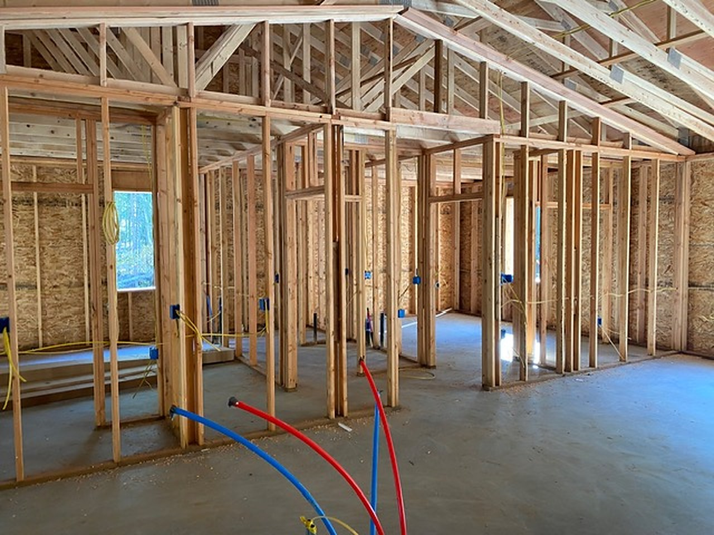

Frozen and burst pipe repair in Fairbanks & North Pole, AlaskaRepair the pipe.
Dry the house.
Interior winters freeze pipes in crawl spaces, exterior walls and houses left without heat. When a line freezes or bursts, Edstrom coordinates the pipe repair through licensed plumbing partners, then handles the water extraction, drying and rebuild. The drying and the rebuild are the same work as our water damage restoration. Emergency response is 24/7 in Fairbanks, North Pole and Fort Wainwright.
What we do
The failed pipe and the water it released.
Edstrom coordinates the pipe repair through licensed plumbing partners, then handles the water extraction, drying and rebuild as one job. Alaska contractor license CONG35843. Edstrom Construction is IICRC certified.
Right away
What to do when pipes freeze in your house
If a pipe is frozen but not leaking, open the faucet it feeds and keep heat on in that area. Never use an open flame to thaw it. If a pipe has burst, shut the main water off; in many Interior homes it's in the crawl space, utility room or at the well pressure tank. Then call us 24/7.
Where they freeze
Frozen pipes in crawl spaces and exterior walls
In Fairbanks and North Pole, most freeze-ups happen where a line runs through a cold crawl space, an exterior wall or under a cabinet on an outside wall. When we close the wall back up, we restore the insulation the water ruined. The drying is the same work as our water damage restoration.
How the job goes
What happens after a pipe freezes or bursts.
- 01
Shut it off and call
If you can reach the shutoff safely, turn the water off. Then call (907) 488-0452. We answer 24/7.
- 02
Coordinate the pipe repair
We open the finish enough to reach the failed section. Licensed plumbing partners repair or replace it. We then dry the house and rebuild.
- 03
Dry and document
We extract water, dry the building and photograph both the pipe and the water damage.
- 04
Rebuild the finish
We close the walls and ceilings and replace finishes the water ruined, then walk it with you.
Insurance claims
We document the pipe and the water, then bill directly.
A sudden burst and a slow leak are not always treated the same way on a policy. Your insurer decides which is which. We photograph the failed pipe and the rooms it wet, write a line-item estimate at current Alaska pricing, and bill your insurance company directly for the covered water extraction, drying and rebuild. Pipe repair is coordinated through licensed plumbing partners.
You choose the contractor. We will meet the adjuster at the house. If the estimate missed a wet cavity, we submit a supplement with the photos.
Coverage and payment are decided by your policy and your insurance company. A direct bill is not a promise that a claim will be paid, and an estimate is not a coverage decision. Edstrom Construction is a licensed general contractor, not a public adjuster. If something is not covered, or you want an upgrade, we price that work in writing before we do it.
We bill insurance directly
We bill your insurance company directly for the water extraction, drying and rebuild after a frozen or burst pipe. Payment still depends on your policy.
Questions
Straight answers.
Who handles the pipe repair?
Edstrom coordinates the pipe repair through licensed plumbing partners and handles the water extraction, drying and rebuild. If water has not entered the walls, ceilings or floors, the pipe work can go to a licensed plumbing company on its own.
Is emergency pipe repair available 24/7?
Yes. Call (907) 488-0452. We provide 24/7 emergency response in Fairbanks, North Pole and Fort Wainwright. If you can safely reach the shutoff, turn the water off.
Do you bill insurance directly for a burst pipe?
Yes, when the loss is an insurance claim. We bill your insurance company directly. Your insurer decides what the policy covers. We do not guarantee payment.
What if the pipe is inside a wall or ceiling?
We open the finish to reach the pipe. Licensed plumbing partners repair or replace the failed section. We dry the cavity and close the wall or ceiling. Moisture readings tell us when that cavity is ready to close.
Service area
Fairbanks, North Pole and Fort Wainwright.
We respond to frozen and burst pipes in Fairbanks, North Pole and Fort Wainwright. Licensed plumbing partners handle the pipe repair. Edstrom handles the water extraction, drying and rebuild. Our shop is at 2135 Richardson Hwy, North Pole, AK 99705. Emergency response is 24/7. Call (907) 488-0452.
- Fairbanks
- North Pole
- Fort Wainwright